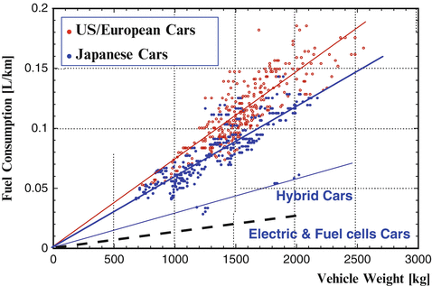
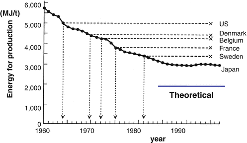
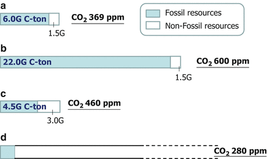
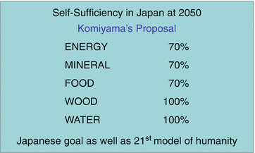

Next let us consider the second paradigm—“The Limited Earth.” The problems caused by the fact that the Earth is limited are far-reaching. These include not only energy
, resources, global warming, air pollution, water pollution, ground pollution, food, and water, but also—if we think broadly—such problems as the widescale spread of infectious diseases of people and livestock. The reason is that the probability of virus mutation and transmission increases along with the probability that wild animals come into contact with livestock, livestock with other livestock, humans with livestock, and so on. And in turn, the probability of contact on the limited surface of the Earth increases in proportion to the square of the population density.
“Vision 2050” has been proposed as a solution to three of these issues, namely energy
, resources, and global warming. These three problems are deeply interrelated, with each problem and response coupled to the others. Therefore these three issues must be solved at the same time. That solution is “Vision 2050,” a model that the world should aim for in order to solve these problems confronting humanity.
Of course, “Vision 2050” does not include other problems facing our world, such as terrorism, political conflict, or eradication of poverty. While it does narrow down the focus to the material foundations of the overarching picture, in order to solve these three problems, it is a vision that gives structure to and integrates fragmented and scattered knowledge
, thereby providing a whole picture of these issues.
Vision 2050
As a world model, “Vision 2050” is a comprehensive model that, under the assumptions of growth of developing nations and maintenance of living standards in developed nations, aims to solve the problems of energy
, resources, and environmental conservation. That is, (1) tripling energy efficiency, (2) building a system for material cycling, and (3) doubling the use of non-fossil fuels.
If in the future all the countries of the world, including developing countries, are to enjoy the living standards of the present developed world, then it is clear that colossal amounts of energy
will be necessary. It is projected that the world’s population in the year 2050 will be slightly more than 9 billion, but if that is indeed so, then energy consumption
will likely rise to three times the present level (Komiyama 1999a; Komiyama and Kraines 2008). If we simply let things take their own course, the world will rely on fossil fuels such as coal and oil
just as in present-day China, and it will be unavoidable that the concentration of greenhouse gases, beginning with carbon dioxide, will rise even further.
On the other hand, if income levels rise, it is highly probable that around 2050 the population increase centered on developing countries will also halt, and the global population will peak at approximately 9.1–9.6 billion and thenceforth slowly decline. Thus, from now until 2050, if we hold in check the increase of the burdens on our Earth by planning for thoroughgoing energy
conservation, recycling of resources, and the use of green energy, then the Earth will likely continue to provide a sustainable foundation for humankind.
The grave issue is the fact that the rate of the Earth’s response is slow. For instance, even if at some point the concentration of greenhouse gases reaches a fixed level, the sea-level rise from global warming will continue for a 1,000 years after that point (IPCC 2007). This is because the water temperature of the deep oceans will lag behind and continue to rise. The bottom line is that we are reaching a state where we will no longer be able to stop global warming. For this reason alone we must take action without a moment’s delay.
Just as it is from the standpoint of population projections, I believe that the year 2050 will be a major crossroads for the Earth and for humanity. However, the reality is that achievement of even the modest goals of the Kyoto Protocol is in a difficult situation. Therefore, taking into consideration the speed at which people’s agreement can be molded and the rapidity of technological progress, it is most logical to exert ourselves with the year 2050 fixed as our goal. And so it is “Vision 2050.”
Even If the Number of Automobiles Quadruples, Energy Consumption Can Still Be Reduced
Let us test from a theoretical and technical standpoint whether “Vision 2050” is possible. Regarding the appropriateness of the first goal of tripling energy
efficiency, I have arrived at the conclusion that this is indeed possible by investigating all of the principal categories of energy consumption
. I have comprehensively investigated not only my own field of specialty, petrochemistry, but also the so-called raw materials industries which, even in the manufacturing domain, consume energy on a massive scale, such as the steel industry, paper and pulp, and glass. (My works Chikyuu Jizoku no Gijutsu [Iwanami Shoten] and Chikyuu Ondanka Mondai ni Kotaeru [UP Sensho] contain more on these topics (Komiyama 1995, 1999a, b). Please consult them for further information.)
When we consider energy
consumption
, it is wise to divide the consumption into energy that is consumed in order to make things and energy that is consumed when these produced items are used.
First, as an example of the latter, let us look at automobiles. Automobiles consume 15 % of all energy
used, and the effort to save energy in this area is one of the most important issues on the consumption
side (Agency for Natural Resources and Energy 2012).
When cars run, energy
is dissipated in the friction between the tires and the ground. To be more precise, when the speed exceeds 100 km/h (kilometers per hour), the effect of air resistance also comes into play, but up to speeds of 70 or 80 km/h at which a car travels on ordinary roads, the issue is almost entirely the drag arising from tire on road. If there were no frictional drag, after a certain speed is reached then the car would continue to move without using any energy. The theoretical limit of energy required for lateral transport is zero.
In fact, these days “energy
-saving car races,” in which entrants compete over how far they can travel using one liter of gasoline, are taking place all over the world. In an international race in 2009, the winning team from Switzerland amazingly ran over 5,000 km. How many liters of gasoline did they use to travel 1 km? If you calculate one liter divided by 5,000 km, it is extremely close to zero. The Swiss team’s car weighed 25 kg, and the woman who drove it weighed 45 kg, for a total of 70 kg, so compared to an ordinary car the weight was almost zero. In short, this proves experimentally that if the weight of the car is close to zero then it can run a long distance while using hardly any energy.
Accordingly, let’s plot a graph (Fig. 3.1) with the number of liters used to travel 1 km on the vertical axis and the car’s weight on the horizontal axis. If the technology used is the same, then the points fall on a straight line with a positive slope passing through the origin (i.e., the heavier the car, the more gas consumed).

Fig. 3.1
Automobile energy consumption to 1/10 at 2050. (Data from Yahoo! Jidosha)
Please have a look at Fig. 3.1. The line on top is for U.S. and Europe
an carmakers such as GM and Volkswagen, and the one beneath it is for Japanese manufacturers. As you can see from this graph, if you compare Japanese cars to Western cars of the same weight, the fuel economy of Japanese cars is about 20 % better. The fact that the energy
efficiency is 20 % higher for a car of the same weight means that this is not a case of better fuel economy because the car is lighter, but rather that the energy efficiency is high because the technology is good. Furthermore, if we move to hybrid cars, than at the same weight the car runs the same distance on half the fuel. If we then move to electric vehicles or fuel-cell vehicles, this is cut in half once again. Incidentally, the data point for the Swiss team mentioned above is practically on the origin of the graph.
In the future, if the automobile weight reductions continue and the weight is cut by about half, and electric cars or fuel cells come into wide use, the energy
consumed by cars will fall to 1/2 (from the weight reduction of the car frame) times 1/5 (= 4/5 × 1/2 × 1/2), or 1/10 of the present value. This shows the possibility that in the future, even if the number of vehicles in the world grows to triple the current number, because the amount of gasoline consumed by each will be one tenth the level now, the total energy used will be about one third.
Electric vehicles and fuel cell vehicles run on a motor without using a combustion engine. Compared to the case where such an engine is used, the number of parts that reach a high temperature is small, and so the necessity to use steel as material for the vehicle’s parts is reduced. Because lighter materials can be used, it is possible to reduce the vehicle’s weight.
However, the reduction of carbon dioxide emissions by a large margin from the high energy
efficiency of electric vehicles is limited to countries like Japan which have a high efficiency of electricity generation. For example, compared to a coal-fired electricity generation efficiency of approximately 38 % for Japan, in China on average it is on the order of 28 %, and in the United States it is 30 % or so. As a result, in countries such as these, even if, owing to the spread of electric vehicles, carbon dioxide emissions during vehicle operation are reduced, the emissions from electric power plants will rise. Moreover, because nearly all of China’s thermal power plants do not desulfurize emissions, air pollution assumes serious proportions. In these countries, it is necessary to come to grips with these problems in a comprehensive way, by among other things strengthening energy conservation and instituting pollution countermeasures.
It is projected that the world’s population will reach about 9 billion in the year 2050 (United Nations, New York 2011). At that time, supposing that most countries of the world reach the same level of development as the present-day developed nations and own automobiles at a proportion of just under one vehicle per two people, the number of vehicles in the world will be more than 4 billion. As there are now about 1 billion vehicles in the world, the number owned will quadruple.
In general, a great many people make an argument along the lines of the following: “If the Chinese all come to own a household vehicle, and if this trend spreads to India as well, then nothing can be done to save the global environment.” But that kind of argument does not take into account the advance of technology.
The reason that arguments about the energy
consumption
of vehicles time and again become vague is that they are not based on an orderly theory. And so they do not reach a clear conclusion regarding the extent to which the energy efficiency of automobiles can be improved. For instance, in the graphs of fuel economy used in automobile catalogs, because it is often the case that engine displacement
is shown on the horizontal axis and fuel consumption on the vertical axis, it is not possible to comprehend how far energy efficiency can be improved through technological progress.
If, as in Fig. 3.1, on the vertical axis we plot the number of liters of gasoline used to run 1 km and on the horizontal axis the weight of the vehicle, from the very beginning we may come to see the future. In short, for the energy
consumption
required to propel a vehicle, zero is the theoretical limiting value. In the example of the Swiss team mentioned previously, the fuel efficiency was close to this limit and falls near the origin of this graph. Through the development of energy conversion technology and lightweight material technology, how close to this origin we can come is in fact the goal.
Thinking in this way, even if the number of cars cruising through the world quadruples from the present number, if the energy
efficiency is five or even ten times the current level, then the energy consumed to power these vehicles will decrease. That this is possible has been shown by theory; the forecast for technology provides the view of how it is possible to approach this theoretical limiting value. To sum up, in the case of automobiles, realizing the technology to approach the theoretical limiting value is the answer to the problem of a “Limited Earth.”
Not only for automobiles, but also for such devices as air conditioners and water heaters which use a great deal of energy
, the gap between the theoretical limit and the present state is large, and there is ample room for improving energy efficiency. This fact is one of the grounds for the possibility that technology can contribute to the future.
Energy Conservation Can Be Realized Economically
Automobiles provide an example of something humans make that consume energy
when they are used. Let us consider cement
as an example of using energy to make something.
Figure
3.2 shows the amount of energy
consumed in producing 1 ton of cement
. Cement is made using limestone, clay, silica, etc. as raw materials, but because it involves an endothermic reaction energy is always required. In the production of cement, Japan’s energy efficiency is overwhelmingly better than that of other countries.

Fig. 3.2
Energy Consumption for Cement Production. Source: Japan Cement Association
Japanese cement
companies, by significantly improving the production process from wet process to dry process to suspension pre-heater (SP) and then to the new suspension pre-heater (NSP) process, have up until now reduced energy
consumption
. At present, all of the cement plants operating in Japan have adopted the newest NSP process. Through this technological progress, for cement production the energy efficiency has already come down to 1.6 times the theoretical limiting value, having fallen to the point where further reductions are difficult.
However, if we look at the entire world, there are still many countries where energy
consumption
can still be reduced. As can be seen in the figure, for instance in the U.S. producing 1 ton of cement
uses 1.6 times the amount of energy used in Japan. The reason is that the U.S. has adopted a policy of holding energy prices at a cheap level. Likewise, China, which produces more than half the world’s cement, uses 1.6–1.7 times as much energy as Japan.
These facts offer the following two important insights. One is technology transfer. For countries like Japan possessing the most advanced production processes, further reducing energy
consumption
is difficult. However, if China introduces Japanese technology, the energy consumed to make the same 1 ton of cement
can be significantly reduced.
Energy consumption
falling from 1.7 to 1 means a 40 % reduction. Because the energy
consumption of one country which produces half the world’s cement
is reduced by 40 %, the effect of controlling energy use and carbon dioxide emissions is extremely large.
China too is embracing the idea of a “Green China,” and awareness is increasing of the need to reduce the burden that economic growth
imposes on the environment. However, considering the scale of the economy, energy
consumption
is excessively high. Introducing established technology with high energy efficiency is surely China’s responsibility as a great power of the world.
This is where the energy
-conserving technology that Japan has amassed comes in. As we have seen in the case of cement
, in the world’s energy efficiency, there is a gap between respective countries or factories. If superior technology diffuses throughout the world, that alone would bring about a drastic reduction in energy consumption
. And this will also provide an excellent business chance for Japan’s industrial sector.
The improvement of the entire world’s energy
efficiency will be brought about by the development of state-of-the-art technology and the transfer of established technology. We must realize that Japan is in an advantageous position both in “technology development” fields where there is still room for improving energy efficiency (such as automobiles, air conditioners, etc.) and also in “technology transfer” fields where the improvement of energy efficiency is already nearing its limits.
One more important insight is that the improvement of Japanese energy
efficiency took place in a free market. In short, Japanese cement
companies were able to raise their energy efficiency because this was realized in an economical way. To build a new plant, capital investment is necessary. In other words, it is the case that these investments were undertaken because, through the increase in energy efficiency and reduction in energy costs, the investments could be recovered.
Similarly, it is not true that the improvements in energy
efficiency of Japan’s coal-fired thermal power plants were pursued with the Earth’s environment in mind. Because by implementing these improvements energy costs could be lowered and the investments recovered, the capital investments were made and the efficiency of coal-fired power plants was raised. Actually, in the case of Japan’s coal-fired power plants, the energy efficiency with which coal is burned and converted into electricity reaches as high as about 40 %, but in China on average it is on the order of 28 %, and in America 30 % or so (Ecofys Netherlands 2010).
In today’s world, there is an excess of capital but it lacks a place to go. As a result, too much investment has flowed into securitized financial instruments intended to produce money from money, and this brought on the financial crisis.
In contrast, investments in energy
-conserving technologies, by actually lowering energy costs, produce value and have a high chance of being able to recover the capital. Of course, energy conservation technology investments are not the types of thing that yield the huge annual returns of 20 or 30 % that Wall Street shoots for. But, if investments are made in areas and promising technologies able to conquer the problems of a “Limited Earth,” owing to the reduction in energy costs, annual returns of 3–5 % can be expected. If capital can be directed into such fields, it will be possible to solve the problem of global warming.
The Reason Why Recycling Is More Energy-Efficient
Next let us turn to an explanation regarding the construction of a “material cycle system.” A material-cycle type system is, simply speaking, a recycling society. What is important for humanity is that recycling reduces energy
consumption
.
Let’s consider steel and aluminum as examples. Producing steel from iron ore is a process of turning iron oxide into iron. Since iron ore is an oxide, oxygen is removed from it using a blast furnace and thereby iron is produced. This reaction that removes oxygen is called reduction. For it to occur reduction energy
is necessary. In contrast, when new iron is produced from scrap that is used iron waste, energy is required to melt the iron. This is called the heat of fusion.
If we compare the reduction energy
to the heat of fusion for iron, we find that the reduction energy is 27 times larger. In other words, producing the same amount of steel from iron ore requires 27 times more energy than producing it from scrap.
This is the reason why even now scrap is being commercialized. As of 2009, of the world’s steel production of approximately 1.4 billion tons, 1.0 tons is produced from iron ore and 0.4 tons from scrap. Already 30 % of the iron raw material is being recycled.
After steel, aluminum is the metal used in greatest quantity; the bauxite from which it is made is, like iron ore, an oxide. As opposed to this, aluminum scrap is just metallic aluminum. Producing aluminum from bauxite uses 83 times more energy
than producing new aluminum from aluminum scrap.
The ratio of theoretical values is 27 times for iron to 83 times for aluminum.
For the case of aluminum—which is different from that of steel—whether it is produced from bauxite or from scrap via electrolysis, in either case electricity is used. Therefore it is easy to compare the energy
efficiencies. Compared to the theoretical ratio of 83 to 1, in an actual factory the ratio of energy consumption
is on the order of 30 to 1. Even so, from the standpoint of energy consumption, scrap aluminum is far and away a better resource than the natural ore. As we can see from this, the recycling of metals allows us to reduce energy consumption.
Here too the year 2050 is a critical juncture. By 2050 it is projected that most countries, including China and India, will approach the state of “saturation of man-made objects
.” Take automobiles, for instance: Humankind as a whole is expected to own more than 4 billion of them by 2050. In that state saturation will be reached and the number of vehicles owned will hit a ceiling, after which it is anticipated that there will be no great changes.
Under those conditions, assuming the average service life of an automobile to be 10 years, each year four hundred million vehicles will be sold and four hundred million will be disposed of as scrap. It must be noted that at that time, all of the material resources needed for new vehicles will be contained in the scrapped ones. When this becomes so, it will be possible to make four hundred million new vehicles from the scrap of four hundred million vehicles. Naturally, this represents the extreme case, but if a societal system can be created in which recycling is carried out successfully, then in 2050 new mine resources will become unnecessary. What is more, in principle recycling results in less energy
being consumed than making new products from mineral resources dug out of the ground.
Now, of course it is not possible that new resources will become absolutely unnecessary. The main reason is that impurities are mixed into scrap.
For example, the steel cans used for beer and other drinks and formed into a can shape at one go by applying pressure to flat metal sheets. But for this purpose the steel must be of high quality, lest cracks appear. In fact, in high-purity steel, small amounts of other materials are intentionally admixed in, but it is difficult to make such high-quality steel from scrap.
For this reason, it is not the case that everything can necessarily be made from scrap; about one tenth of all steel used will contain new steel, and the one tenth of the used steel that has truly become impure will be discarded. In other words, I believe that in the actual shape of things to come, nine tenths of used items will be recycled.
Up until the present humanity has dug iron ore from the earth, and reduced it with coke to produce steel, thereby accumulating it as a man-made object. Before long these man-made objects will saturate and society will evolve so as recycle the steel already in existence in the world. This is what I have called the “material circulating society,” and I expect its arrival by roughly the year 2050.
“Urban Mines” Are Not an Urban Myth
Not only steel and aluminum, but other metal resources such as copper can be recycled in the same manner. Take gold for instance. The gold ore dug from mines is said to contain per ton 5–10 g of gold, and at this level it is high grade. In contrast, a 1 ton collection of cell phones contains 250 g of gold, and can be said to be a much higher grade of gold ore than that from mines. This is the reason they are called “urban mines
.”
In thinking about the future, the lithium used as a raw material in batteries is also critical. In producing rechargeable lithium batteries, from the very start recycling is considered to be a premise. At the present time, since the diffusion rate of lithium batteries is still low and the saturation state of “man-made objects” has not yet been reached, it is necessary to manufacture the batteries by mining lithium resources. Naturally, because of this it is a precondition that Japan not lose out in the competition for resource acquisition.
However, if we set out to create a recycling system for lithium batteries from the outset, after 20 or 30 years we will possess a sufficient amount of lithium battery capacity for the needs of society and anything above this will be unnecessary. At that time, if a lithium battery recycling system has been set up, there will be no need to mine and import lithium resources.
This is an optimal arrangement for Japan, which is lacking in resources. It is also a model that humanity should aim for.
Three Points for Building a “Material Circulating Society”
If a “material circulating society” can be created in this way, humanity will be liberated from the resource depletion problem, one of the triad of problems of energy
, resources, and environment. The problem is how we go about constructing this re-circulating society. Necessary to successfully re-circulate resources are the following three things: a societal system for recovering resources, product design that allows for easy separation of resources, and the technology for separation. The direction of the future is to construct a material circulating society via these three avenues.
Regarding the societal system, the cooperation of citizens will probably also be necessary. It may well be good to consider a system where money is paid and resources are collected. Formerly, the disposable camera (the so-called “QuickSnap”) was a case of building up a system for resource re-circulation. As long as the resources come to be naturally collected, because in principle using recycled resources consumes less energy
at a lower cost, the resources will come to be re-circulated smoothly.
It is certain that the material circulating society will be a more complicated society than the old one. Steel
was made by digging up iron ore from the earth and removing oxygen from the iron ore in a blast furnace. Producing it in mass quantities, using it in mass quantities, and discarding it in mass quantities: this was the way of the world through the twentieth century.
In the re-circulating society, once something is used it will be collected and re-used. It is a fact that constructing a system in which resources are not dug out of the earth will be a difficult business, but a re-circulating society is a more advanced society and humanity has no choice but to make such a society its goal. The reason is that we are already being confronted by the global warming problem, and moreover, in the not-too-distant future our resources will be exhausted.
At Present 80 % of Our Energy Relies on Fossil Fuels
We have explained that if we can raise energy
efficiency we can greatly reduce energy consumption
, and that if we can realize a recycling society we can greatly reduce mineral resource consumption. Next let us consider whether we can double our use of non-fossil energy in order to lower the fraction of our energy that relies on fossil fuels.
At the present time, broadly speaking about 80 % of the world’s primary energy
supply relies on oil
, coal, and natural gas
, which are fossil fuel resources. Of this 80 %, the ratio is about one third for each of these three sources. The two big problems with fossil fuels are that they release large amounts of carbon dioxide when burned, causing global warming, and that sooner or later they will be depleted.
The remaining 20 % is made up of non-fossil fuels, of which nuclear power
and hydropower each contribute 5 %, and biomass derived from plants contributes 10 %. Present-day biomass is, simply stated, “firewood,” and mainly in developing countries it provides much of the energy
used for cooking.
Assuming that the world’s population continues to increase as it has and the growth of emerging countries like China, India, and Russia continues and they reach the level of today’s advanced nations, in around 2050 roughly three times more energy
than now will be used. Because “Vision 2050” aims for triple the energy efficiency (i.e. one third the primary energy consumption
), supposing that this can be realized, the total amount of energy consumed in 2050 will be no different from the present. Presupposing these conditions, the proposal of “Vision 2050” is to reduce the share of fossil fuels from the current 80 to 60 %, and to raise the share of non-fossil fuels from 20 to 40 %. It is thought that nuclear, hydro, solar, wind, biomass, and geothermal are realistic components of this 40 % (Komiyama and Kraines 2008).
Nuclear Power as a Transitional Energy Source
If we say we are going to reduce our use of fossil resources, as alternate sources we have only nuclear energy
, solar energy (including biomass, wind, and hydro, all of which are ultimately derived from the sun’s energy), and geothermal energy.
For nuclear energy
there are the two options of nuclear fission and nuclear fusion. Whether nuclear fusion can be put to practical use and largely relied on or not is unclear at this time. Even if it does become possible, like large-scale geothermal, it probably won’t be until the twenty-second century. In light of this, until that time we can only count on the nuclear fission path of what is now called nuclear power
generation.
But still, can humanity rely entirely on nuclear energy
in the future? That too would no doubt be difficult. If nuclear power
were to substitute for all of today’s energy, the world would need about 10,000 large 1-GWe-sized nuclear power plants.
If we think of the diverse regional conflicts taking place throughout the world, we would have to consider whether humanity could properly control a situation in which as many as 10,000 nuclear reactors existed, from which plutonium and uranium—the raw materials for nuclear weapons—could be extracted.
Moreover, we have experienced the major accidents at Three Mile Island and Chernobyl, and now even in Japan, which is said to possess superior safety technology, the Fukushima Daiichi accident has occurred. Furthermore, in the future nuclear reactors will one after another reach the end of their service lives. As an engineer, I find it impossible to imagine the difficulties of undertaking the colossal construction of 10,000 reactors and then maintaining them all.
In reality, there are also countries such as France, which relies on nuclear power for about 80 % of its electricity generation. Prior to the accident at Fukushima Dai-Ichi, Japan’s level of reliance on nuclear energy was about 30 %. In the wake of the accident, at this writing in August 2013, only two of Japan’s 50 reactors are operating, while the remaining 48 are out of service for necessary safety upgrades and inspections. As an alternative to make up for the lost nuclear generation, many thermal power plants that had been dormant have been brought back on line.
In the case of a country like France, it is difficult to make a transition to renewable energy in a short time period. However, in the case of Japan, along with taking the opportunity following the nuclear accident to further advance energy conservation methods, it is necessary to accelerate the transition to renewable energy. We should proceed with the understanding that nuclear energy ultimately is an energy source to be used in this transition period.
From the twenty-second century onward, a world centered on solar energy
will likely be realized. However, it takes time and money to introduce a new energy system on a large scale. It is necessary to consider the twenty-first century a transitional period until that time, and to make the debate over nuclear power
a constructive one.
Producing Biomass in the Desert
Ultimately, energy
sources reliant on fossil fuels and nuclear power
will have to be replaced by renewable energy. This renewable energy, also known as natural energy, comes in various forms. However, I believe that there are only five types of renewable energy that during the twenty-first century can grow to the scale of at least 1 % of total energy supply: hydro, geothermal, solar, wind, and biomass. There are various other methods, such as ocean thermal energy conversion and wave power, which can be introduced on a small scale, but energy sources that can supply more than 1 % of our energy are limited.
For instance, even now hydropower accounts for 8 % of Japan’s electricity and about 3 % of its total energy
(International Energy Agency web-site 2013a, b, c). There is probably still room for expanding the application of small- and medium-sized hydro resources. There is also a great deal of room to develop wind technology and biomass technology, to say nothing of solar cell technology. Geothermal also offers possibilities for expansion. According to some estimates, Japan possesses the world’s third largest potential for geothermal energy production. The development of technology to utilize geothermal sources deep within the Earth’s crust offers considerable promise. These technology improvements and their mass production will ultimately lower costs and accelerate the introduction of renewable energy.
In Chap. 4 I will provide a detailed explanation of solar cells, and so here I would like to discuss biomass. The biomass I am talking about here is not the firewood cut from trees. Likewise, making ethanol from corn and using it to power automobiles has lately been in the news, but using food crops for energy
is not appropriate.
Let’s look at the reason. Using the oxygen they take in through breathing, humans burn the nourishment obtained from food, and with the energy
thereby generated they carry on the activities of life. Food after all is something that humans internally convert into energy. Incidentally, that energy is on average one hundred watts per person.
The energy
from food, when compared to society’s total energy supply, is small, corresponding to about 10 % of the total energy consumed. Using 10 % of all food, even if we could make ethanol without any loss at all, we could only produce enough for 1 % of our total energy needs. Using corn as biomass—that is, trying to use food as energy—has an effect that is trivial.
Moreover, conversely if we were to use 10 % of all food supplies for energy
purposes, food shortages would become grave. Actually, in 2007 as a result of corn harvests being directed toward ethanol production, the price of corn skyrocketed and became a major problem in some countries, such as Mexico (Wise 2012). Additionally, the price of feed for cows and other animals soared, and livestock farmers in Japan too were extremely hard hit (Inaguma 2009). These events are self-explanatory if we compare the relative quantities of food and energy resources.
By the year 2050 the world’s population will likely rise to about 9 billion. Besides this, along with the increase in economic wealth, the ratio of meat consumption
will increase. For example, chickens require an amount of grain that corresponds to three times the amount of energy
in the chicken meat they produce. In turn, to produce the same amount of meat, cows require twice as much grain as chickens. Considering the increase in population and the changes in eating habits, I am afraid that food shortages will be historically inevitable. In consequence, using food products as biomass is not an option, and all land that can be used as farmland will likely be put to use for food production.
In thinking about the future of biomass, the most important questions are what will be used as the raw materials and where will it be raised. For the large-scale introduction of biomass, broad swaths of land and efficient sunlight are necessary—in other words, a high speed of plant growth.
I believe that using seawater to grow algae in the desert is full of promise. There is sunlight in abundance, but because the cost of using fresh water is high, sea water will be drawn in and used. Many deserts in the world are located close to seashores.
Now, the phytoplankton that grow in sea water, such as for instance chlorella, spirulina, or euglena, have a high efficiency for photosynthesis and are single-celled. Among these, some contain a ratio as high as 30 % of constituents that are extremely similar to oil
. If these kinds of phytoplankton are raised and pressed, oil substances can be obtained. The oil substances can be used for such things as jet fuel, and the gases obtained from pressing can be burned in place of coal to generate electricity. If these gases are compressed and solidified into briquettes, they can also be easily transported.
In the future, through the medium of biomass, there will be ample potential for the efficient use of solar energy
.
Reducing the World’s Carbon Dioxide Emissions by 25 %
Let us look at “Vision 2050” from the standpoint of carbon dioxide emissions. Figure 3.3 shows world energy
scenarios and the concentration of carbon dioxide in the year 2050 under each scenario.

Fig. 3.3
Energy scenario and CO2 concentrations: (a) 1990, (b) 2050 BAU case, (c) vision 2050, and (d) after twenty-second century. Source: Komiyama H and Kraines (2008)
At the present time, owing to the use of fossil fuels, about 6 billion tons of carbon dioxide are generated per year. (Note that here and in the following, the mass is given in terms of the carbon content of the CO2. Because of the addition of oxygen to the carbon, the total mass of CO2 is 3.7 times the mass of the carbon.) The white portion corresponding to 1.5 billion tons is the amount covered by the non-fossil sources: nuclear, biomass, hydropower. If this energy
were obtained by burning fossil fuels instead, an additional 1.5 billion tons of carbon dioxide would be generated. Currently, the 6 billion human beings living on the planet use this much energy (Komiyama 1999b).
Figure 3.3b shows a projection of what will happen in 2050 assuming that the world population grows to 9 billion, almost all countries become advanced nations, and present patterns of energy
consumption
continued unchanged. Here it is assumed that all nations will reach a level of energy consumption equivalent to today’s advanced countries (excluding the U.S.). Because this is the business-as-usual scenario, the use of renewable energy does not rise much, and the increase in energy consumption is almost entirely covered by fossil fuels. As a result, energy consumption triples, and carbon dioxide emissions in fact grow to 22 billion tons per year, much more than triple the current level.
This is the “breakdown” scenario. It is the scenario in which the carbon dioxide concentration in 2050 will reach approximately 600 ppm, and the Earth’s temperature compared to the pre-industrial revolution era will likely rise about three degrees.
If this happens, even looking from an energy
resource perspective, even for coal (which is generally thought to have the largest reserves), depletion will start to become a reality. Therefore, the business-as-usual scenario is the same as a breakdown scenario, and in this sense the problem is that present-day humanity is headed for a breakdown.
A Vision on Which Advanced Countries and Developing Countries Can Agree
I believe that “Vision 2050
” is a vision on which advanced countries and developing countries can agree.
In advanced countries man-made objects are already reaching saturation. If material living standards and the quantity of services are maintained at about the same level, tripling energy
efficiency means that energy consumption will decrease to one third its current amount. If non-fossil energy sources, which now account for roughly 20 % of energy consumption, are doubled, reliance on fossil fuels will fall to 60 %. Should this happen, compared to the present the amount of fossil fuels used in 2050 will be 1/3 (from the reduction in energy consumption) times 6/10 (from the decrease in fossil fuel reliance), or 1/5. Emissions of greenhouse gases
such as carbon dioxide will automatically fall by four fifths, or 80 %.
At COP-15 (the 15th Conference of the Parties to the United Nations Framework Convention on Climate Change) held in Denmark in December 2009, leaders of the United States, European Union, Japan, and other advanced industrial nations agreed in recognizing the need to reduce greenhouse gas emissions by 80 % by the year 2050 (UNFCC 2010). The principles for achieving this are just what we have described.
On the other hand, it is also the due right of developing nations to continue growing in order to become advanced nations. Total world-wide energy consumption
will be maintained at its current level, but advanced nations will reduce their consumption to one third, with the remaining two thirds allotted to developing nations to support their economic growth. However, they must use the most advanced, highly energy efficient technologies. For automobiles, for instance, just as in developed nations, they will use vehicles with high fuel economy. Or, as we showed in the case of cement, they will use highly energy-efficient production technologies.
In so doing, the merits for developing countries can be explained this way: “Investing in energy conservation results in energy cost savings and is economically beneficial; and what is more, we want to make good use of the excess capital in the world.” Now, the bargain that emerging economies must make is that production is their right, but efficiency is their duty. This is the key to success for “Vision 2050
.”
It is certain that the achievement of “Vision 2050
” will not be a simple matter for either the developed world or the developing world. Developed countries will cut carbon dioxide emissions by 80 % while maintaining their standards of living; developing countries will grow while restraining their emissions. For both parties, this is surely the best vision on which they can agree.
Here let us briefly summarize the gist of “Vision 2050
.” By raising energy efficiency
, energy consumption will be reduced. By creating a material circulating society,
virtually all resources will be reused, and at the same time energy consumption will be cut. Through the decrease in energy consumption and the expansion of non-fossil energy use, reliance on fossil-fuel sources will be reduced and emissions of greenhouse gases
will be significantly slashed.
In concrete terms, energy efficiency
will be tripled and, in addition to this, non-fossil energy sources (nuclear, hydro, solar, wind, biomass) will be doubled from the present. If this is done, then “Vision 2050
” assumes a form in which world emissions of carbon dioxide decrease by 25 % from roughly 6 to 4.5 gigatons per year. Through these means, the three problems of energy, resources, and global warming will be simultaneously solved.
The important point is that if by 2050 we can meet the goals of “Vision 2050
,” our prospects heading into the twenty-second century will be bright.
What does it mean to meet the goals of “Vision 2050
”? It is a presupposition that for renewable energies, inexpensive and highly energy-efficient technology will be obtainable; moreover, if nuclear power
that has overcome the safety issues is added to the mix, the realization of this vision will be all the more easy.
From then on, it will suffice to maintain the flow and continue moving forward. By the twenty-second century, we will have established a material circulating society,
so there will be no need to dig resources from the earth. With regard to energy, we will have acquired technologies for the efficient use of clean, renewable energy sources, so fossil-based energy will be practically unnecessary. Solar energy may be thought of as inexhaustible, as it showers down upon the Earth at a rate 10,000 times greater than we use all our energy. Hence, the year 2050 is an important milestone on the way to the twenty-second century.
For a vision, I feel that a kind of forward-looking image that integrates knowledge is essential. If it is merely a pessimistic outlook in which the future is stagnant, it cannot generate vitality among people. If it can be attained, “Vision 2050
” provides an image wherein a world can be created in which the burdens of material and energy are light from the twenty-second century onward.
Japan as a Resource Self-Sustaining Nation
The times are vastly changing owing to the growth of developing nations. The era in which primary resources could be bought cheaply is already ending. In the future, although prices will rise and fall because of changing economic conditions and other factors, over the long term the price of primary resources will no doubt continue to rise. Looking back at the past, crude oil prices have continued to rise from the 1960s, the era when it was a dollar per barrel. Even iron ore, with its large reserves, has lately jumped in price.
Not only price increases, but also indications can be seen that resources are being depleted. For example, take the large-scale crude oil discharge accident that occurred in April 2010 in the Gulf of Mexico off the coast of Louisiana (BP web-site 2013). This showed us the following realities: Of the reserve-rich and easily exploited oil fields on land, almost none now remain, and exploiting oil fields beneath the deep ocean brings with it great risks and high costs.
It is not only a matter of energy resources such as crude oil, but as we head toward 2050 the world’s population will increase, and the problem of food
shortages will grow more severe. Accompanying the enriching of economies, eating habits will shift from being centered on grain consumption and meat consumption will increase. Because eating meat is less energy efficient than consuming grain directly, greater grain production will be necessary.
The depletion of timber resources is also a serious problem. In times past, many civilizations consumed great quantities of timber as an energy resource and building material, and as a result of using up the forests, they collapsed. We must learn from this history.
In light of this situation, what actions must Japan take with respect to “Vision 2050
”? In Japan’s case, the share of the total energy supply accounted for by non-fossil sources is 16 % (Agency for Natural Resources and Energy 2010). In Japan, with its limited land surface, installing solar panels on all roofs and idle land would be able to cover about 8 % of present energy consumption. Wind, biomass, hydropower, and geothermal will also be used. If nuclear power too is employed and the share of non-fossil energy sources is doubled, then they will make up 32 % of the total current energy consumption.
At the same time, there is no need to reduce energy consumption to one third its present level. Assuming that the current volume of goods and services remains fixed, if we further suppose that energy consumption is cut by just over half to 45 % of its present level, on a scale where current energy consumption is 100, this consumption will be 45. Because the non-fossil energy share of this will be 32, the share of non-fossil sources will be 32/45 of total energy consumption. In other words, more than 70 % of all energy consumption can be covered by renewables and nuclear, which emit no carbon dioxide and are inexhaustible.
If this situation is realized, compared to the present the quantity of fossil fuels used will be 45/100 (from the reduction in energy consumption) times (45 − 32)/45 (the new level of reliance on fossil fuels) = 0.13, or about one tenth the present quantity. That is to say, it is possible for Japan and other developed nations to reduce carbon dioxide emissions by 90 %.
Accordingly, if developed countries cut their energy consumption to one third and even if the introduction of renewable energy occurs at a rate about one half that of the above calculation, it is possible to reduce carbon dioxide emissions to roughly one fifth of their current levels. This is the picture of the future “Vision 2050
” paints for Japan and the developed world.
The realization of “Vision 2050
” will consolidate Japan’s material foundations. To summarize this chapter, I would like to propose making Japan’s self-sufficiency rate in 2050 for energy, mineral resources
, and food
70 %, and for timber resources, 100 % (see Fig. 3.4).

Fig. 3.4
Self-sufficiency in Japan at 2050
Regarding energy, as we have already stated, by reducing energy consumption to 45 % of its present level and by raising non-fossil energy use to 32 % (double its present level), over 70 % of energy consumption will be covered by inexhaustible renewable energy and nuclear energy. In other words, 70 % of energy will be provided self-sufficiently.
At the present time Japan relies on imports not only for energy sources, but also for nearly all its mineral resources
. However, considering materials like steel and aluminum, these are in fact recycled to a considerable extent. As noted previously, worldwide about 30 % of steel materials are already recycled products. In the future, as man-made objects approach the point of saturation, this ratio will rise further, and in approximately 2050 a situation is projected in which quantitatively scrap alone will suffice. Japan must anticipate this trend.
In this way, through the construction of a material circulating society,
the recycling rate will rise and the self-sufficiency rate for mineral resources
will be increased to 70 %.
Regarding food
, presently the self-sufficiency rate on a calorie basis is about 40 %. However, of foodstuffs as a whole, actually on the order of 30 % are estimated to be discarded. Therefore, first the amount of waste will be reduced. Furthermore, roughly 30 % of crops are lost in the fields due to damage caused by diseases and harmful insects, but this will be reduced through the improvement of technologies to control these factors. Additionally, the following countermeasures will be thoroughly implemented: land on which cultivation has been abandoned, which currently makes up a considerable area, will be used; high-yield rice varieties will be created; and these will be used to make rice flour and feed for livestock. Through these efforts, the food self-sufficiency
rate will increase to 70 %.
Although timber resources are used for construction and pulp production, the current self-sufficiency rate is less than 30 %. This is a result of the cheap supply of timber from overseas and of the decline of the domestic forest industry, but in the future, owing to environmental conservation and increasing demand from developing countries, the price of overseas timber will likely continue to rise. On the other hand, there is no fundamental reason why a forest industry cannot be realized in Japan, which is humid and warm and covered 70 % by forests. By overcoming the societal issues and developing the technology, Japan must create a sustainable, highly productive forest industry. By doing so, it will be possible to attain a 100 % self-sufficiency rate for timber resources, and this is indispensable for ecosystem maintenance as well.
Water, food
, timber, minerals, and energy form the physical foundations of our lives. Fortunately, Japan is rich in water resources
Moreover, the high efficiency of its waterworks systems is among the best in the world. For example, losses from leakage in Tokyo’s water system are only about 3 %. Worldwide, the average water leakage rate is as high as 30 %, and even in metropolises of developed countries, losses of 30 % are quite common. In the future water will become a critical strategic resource. On this point, the water business is liable to open paths into the many countries that worry about water scarcity.
In conclusion, if these self-sufficiency rates (except for water) can be achieved, Japan’s material foundations will be secure. If a self-sufficiency rate is 70 %, then in a time of crisis it is relatively easy to make reductions of about 30 %. For energy, for instance, as happened during the time of the First Oil Shock, by taking such countermeasures as dimming the neon city lights at night and suspending broadcasts in the middle of the night, it is possible to pull through.
At the risk of repeating myself, considering the population increase and economic growth of developing countries, sooner or later the entire world will have no choice but to head in this same direction. If a country like Japan—with limited land area, a large population, and scant underground resources—can achieve self-sufficiency in energy, mineral resources
, timber, and food
, then this will become a model the entire world should follow.
By moving forward and strengthening its material foundations, Japan will in fact be taking the lead in working toward solutions to problems that the whole world will sooner or later face. This is the basis for calling Japan, as I have been, a “problem-saddled developed country” that can become a “problem-solving developed country.”
References
Agency for Natural resources and Energy (2010) Decline in oil dependence and diversification of energy sources. Energy in Japan, p 9. http://www.enecho.meti.go.jp/topics/energy-in-japan/english2010.pdf. Accessed 31 May 2013
Agency for Natural Resources and Energy (2012) Dai ni-bu energy no doukou. Energy Hakusyo. http://www.enecho.meti.go.jp/topics/hakusho/2012/index.htm. Accessed 31 May 2013
BP web-site (2013) Deepwater horizon accident and response. http://www.bp.com/sectiongenericarticle800.do?categoryId=9048918&contentId=7082603. Accessed 31 May 2013
Bram Borkent (2010) Ecofys Netherlands, International comparison of fossil power efficiency and CO2 intensity, 3.1 efficiency of coal, gas- and oil-fired generation, p 23. http://www.ecofys.com/files/files/ecofys-internationalcomparisonfossilpowerefficiency_2010.pdf. Accessed 31 May 2013
Inaguma T (2009), Chikusan rakunou kiki wo meguru kadai –siryou kakaku koutou to seisaku sienn no arikata-, Rippou to Chyousa 2009.1 No 288, p 92, House of Councilors, The National Diet of Japan. http://www.sangiin.go.jp/japanese/annai/chousa/rippou_chousa/backnumber/2009pdf/20090113092.pdf. Accessed 31 May 2013
International Energy Agency web-site (2013) Electricity/heat in Japan in 2009. http://www.iea.org/stats/electricitydata.asp?COUNTRY_CODE=JP. Accessed 31 May 2013
International Energy Agency web-site (2013) Electricity/heat in France in 2009. http://www.iea.org/stats/electricitydata.asp?COUNTRY_CODE=FR. Accessed 31 May 2013
International Energy Agency web-site (2013) 2009 energy balance for Japan. http://www.iea.org/stats/balancetable.asp?COUNTRY_CODE=JP. Accessed 31 May 2013
IPCC (2007) Climate change 2007: Synthesis report. “Summary for policymakers”. “The long-term perspective”, p 20. http://www.ipcc.ch/pdf/assessment-report/ar4/syr/ar4_syr_spm.pdf. Accessed 31 May 2013
Komiyama H (1995) Chikyuu ondanka mondai ni kotaeru, UP Sensho
Komiyama H (1999a) Chikyuu jizoku no gijutsu. Iwanami Shoten, Tokyo
Komiyama H (1999b) Figure 7-1 energy scenario and concentration of the world’s carbon dioxide. In: Chikyuu jizoku no gijutsu. Iwanami Shoten, Tokyo, p 161
Komiyama H, Kraines S (2008) Vision 2050—roadmap for a sustainable earth (originally published in Japanese, 1999). Springer, Japan
United Nations for Framework Convention on Climate Change (2010) Copenhagen accord. Report of the conference of the parties on its fifteenth session, held in Copenhagen from 7 to 19 December 2009. http://unfccc.int/resource/docs/2009/cop15/eng/11a01.pdf. Accessed 31 May 2013
United Nations, New York (2011) World population prospects, The 2010 revision, highlights and advance tables, p XV. http://esa.un.org/unpd/wpp/Documentation/pdf/WPP2010_Highlights.pdf. Accessed 31 May 2013
Wise TA (2012) The cost to developing countries of U.S. corn ethanol expansion. Global Development and Environment Institute, Working paper no.12-02. Tufts University, Medford, MA 02155, USA, p 13. http://www.ase.tufts.edu/gdae/Pubs/wp/12-02WiseGlobalBiofuels.pdf. Accessed 31 May 2013